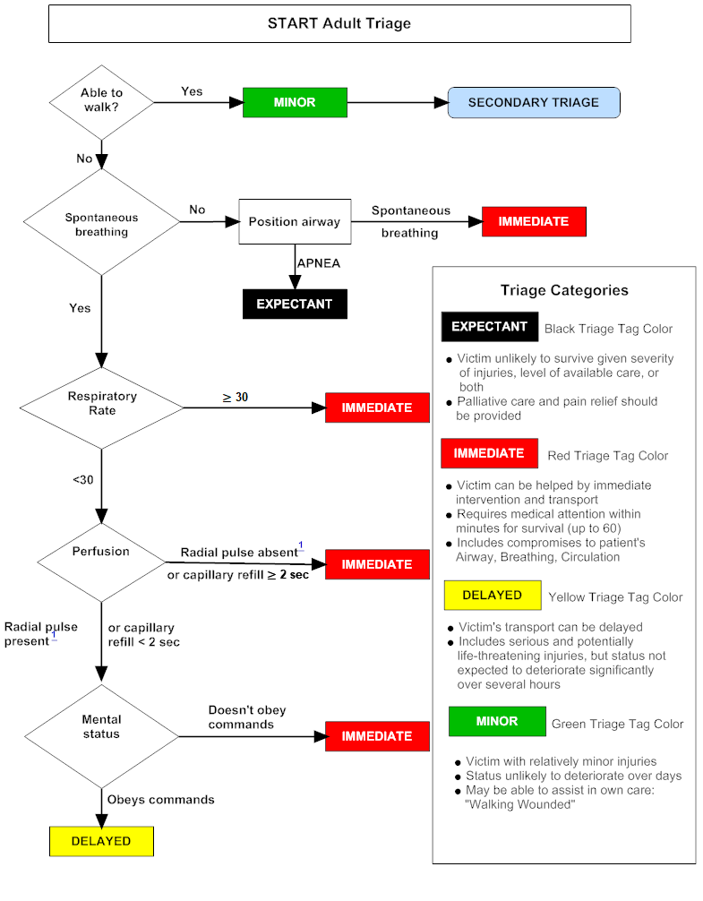

MCI Triage
Home
START
JumpSTART
SALT
References
Open-access mass-casualty incident triage tool
Go to START Triage calculator

Source:
U.S. Department of Health & Human Services, Administration for Strategic Preparedness and Response